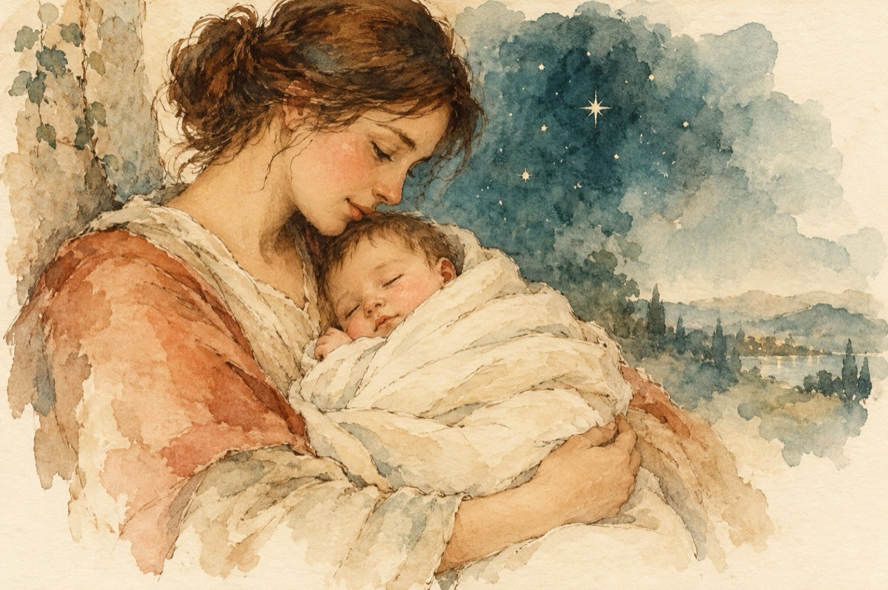

Bebe
Nici nu te-ai făcut de-un an
Și ești mare campion
Știi să-noți într-un lighean
Pescuind și-un pui de somn.
Dai din mâini, dai din picioare
Vrând la-not să-ți faci un stil
Faci de toate-n scăldătoare,
Ce bine-i să fi copil!
Cum ai ieșit pe uscat
După-ntâia aventură
Tragi din sân înfometat
De îți faci spume la gură
Legănat de-a mamei șoapte
Treci în lumea viselor
Îngerii îți stau pe-aproape,
Cântând oda stelelor.
Dormi iubire, dormi în pace,
Eu te veghez cu răbdare,
Mami zilnic ruga-și face
Să crești sănătos și mare!
Vasile Groza